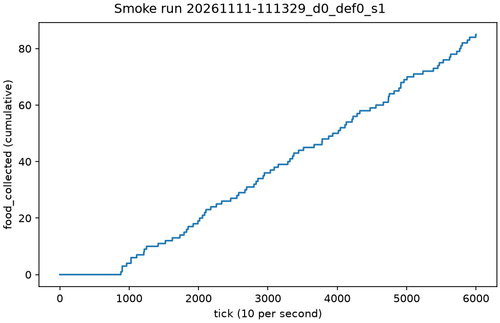

Stage report, step 3 of 8. Back to summary
| What | Run argos3 headless on the generated file. One run writes one folder under runs/smoke/. |
|---|---|
| Why | The real forager and the real grid must collect food and write the log schema. |
| Input data | Generated .argos file(s). Real simulation, no recorded data. |
| Output data | 1 run folder(s) under runs/smoke/. |
| Result (numbers) | food_collected 85, ticks 6000, pickup 92, drop 85. |
| Result (good or bad) | Good: food was collected and pickup and drop were logged. |
| Status | ran |
Figure and table

| runid | food | wasted s | ticks | complete | pickups | drops |
|---|---|---|---|---|---|---|
| 20261111-111329_d0_def0_s1 | 85 | 0.0 | 6000 | True | 92 | 85 |